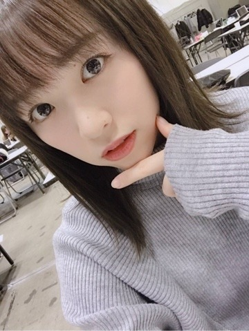
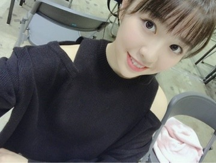
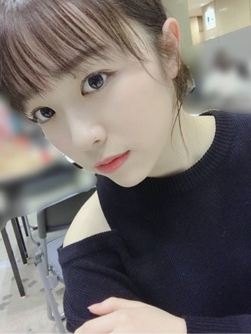

2019/0207Thu一労永逸
こんばんは
東京は雪が一瞬降ったと思ったら
少し暖かく感じる日があったり
まだ冬でいたいのか春になりたいのか
気候は随分と気分屋で困っちゃいます。
季節が変わりゆく瞬間ってなんか
好きですけどね。笑
先日は東京ビッグサイトで
個別握手会がありました。
お越し下さった皆様、ありがとうございます！

ニットニット〜この生地感好き〜
崩れにくいし毛玉にならず、温かい。

肩出し、何年振り？というくらい久々に
やったので皆さんに凄いびっくりされました
ちょっぴり寒かったです。笑

渡辺を探せ
さあ、どこでしょうか〜？
お花、毎回本当にありがとうございます！
珍しかった肌荒れ、治りました

そして先週は沈黙の金曜日に
代打出演させて頂きました！
ちょっぴり最初人見知りもあり
緊張はしていたのですが、、
アルピーのお二人には
私の心の中を全てえぐり取られたような
そんな感覚でした、笑
とっても楽しい2時間でした！
観覧にお越し下さった皆様、
寒い中来てくださり
本当にありがとうございます、、
あの日凄い寒い日で、顔や手が
赤くなってるのを見て凄く
申し訳ない気持ちになりました(>_<)
本当に嬉しかったです、緊張ほぐれた！
ありがとうございます！！！
そしてらじらー。ラジオ続きで嬉しい〜
前回はとてもせかせかしていたので
今回はしっかりオリラジさんと
ゆっくりお話する事が出来たので
嬉しかったです(^ ^)
企画ものが面白く楽しかったですね！笑
それでは。

みり愛
2019/02/07 20:12
コメント(543)
みり愛あああああ
おはよう！おはようみり愛 (^ ^)
(^ ^)
メール、ありがとうね(^ ^)
今日も今日とてメールの返事を送るけど、ひかないでよ〜？
みり愛、バースデーライブでのパフォーマンス、本当にお疲れさまぁ(^ ^)あっ！みり愛に報告するね♪というかしたい！みり愛からメールがこなかったこのライブ期間も、僕はみり愛のことを愛して止まないこの想いを無くしたりはしなかったよ！(^ ^)日奈子とのツーショットだ！ありがとうね♪(^ ^)日奈子の笑顔は守ってあげたい笑顔。みり愛の笑顔は僕を幸せな気持ちにしてくれる特別な笑顔。日奈子が元気そうで何より！日奈子が元気だと僕は嬉しいんだ♪(^ ^)勿論、みり愛もだぞ！みり愛が元気だと僕も元気だし、みり愛が元気だと僕は嬉しいよ✨(^ ^)日奈子も良い子でめちゃくちゃかわいいし好きだよ。だけどみり愛のことはもっともっと大好きだ！(^ ^)僕にとってみり愛は特別で大切な人なんだ(^ ^)愛してるよ、みり愛(^ ^)みり愛のことは自分の全てを捧げても良い程に好き✨(^ ^)
おっ！ハーブティーか！いいねぇ〜♪(^ ^)昨日はお仕事だったよ✨(^ ^)というか大っ好きなみり愛がそう言うと、みり愛のことを愛して止まない僕は同じものが欲しくなる。ということで、昨日はお仕事終わりにハーブティーを求めてお買い物に行った…けど、ハーブティーは売ってなかったよ…(>_<)今はみり愛の淹れてくれたハーブティーが飲みたい気分だ！(^ ^)
ね！めっちゃイイ感じ！綺麗！わざわざありがとうね♪(^ ^)（ホントに綺麗…！まぁ、みり愛の美しさには敵わないけど！(^ ^)）お母様がお元気そうで何よりだよ✨(^ ^)え〜、いいなぁ〜、僕もサンドイッチを半分ずっこしたい〜、みり愛と(^ ^)というかみり愛さんのお母様、みり愛さんを…(>_<)！
御意(^ ^)でもごめん、昨日はやること沢山で早くには眠れなかったよ(>_<)いっぱい寝たいよ〜！みり愛〜(>_<)
うおおおおお(>_<)！みり愛、みり愛は今日もパーフェクトにかわい過ぎるぜ！そのかわい過ぎる全てを独り占めにしたいくらいに大好きだ！みり愛みり愛みり愛みり愛みり愛みり愛みり愛みり愛！世界で一番かわいいみり愛〜♪(^ ^)
今日もまた、おはようからおやすみまで一緒に頑張ろうね(^ ^)
愛してる。
おはよう！おはようみり愛
メール、ありがとうね
今日も今日とてメールの返事を送るけど、ひかないでよ〜？
みり愛、バースデーライブでのパフォーマンス、本当にお疲れさまぁ
おっ！ハーブティーか！いいねぇ〜♪(^ ^)昨日はお仕事だったよ✨(^ ^)というか大っ好きなみり愛がそう言うと、みり愛のことを愛して止まない僕は同じものが欲しくなる。ということで、昨日はお仕事終わりにハーブティーを求めてお買い物に行った…けど、ハーブティーは売ってなかったよ…(>_<)今はみり愛の淹れてくれたハーブティーが飲みたい気分だ！(^ ^)
ね！めっちゃイイ感じ！綺麗！わざわざありがとうね♪(^ ^)（ホントに綺麗…！まぁ、みり愛の美しさには敵わないけど！(^ ^)）お母様がお元気そうで何よりだよ✨(^ ^)え〜、いいなぁ〜、僕もサンドイッチを半分ずっこしたい〜、みり愛と
御意
うおおおおお(>_<)！みり愛、みり愛は今日もパーフェクトにかわい過ぎるぜ！そのかわい過ぎる全てを独り占めにしたいくらいに大好きだ！みり愛みり愛みり愛みり愛みり愛みり愛みり愛みり愛！世界で一番かわいいみり愛〜♪(^ ^)
今日もまた、おはようからおやすみまで一緒に
愛してる。
おいおいおいおいおい！
みり愛あああああ
今日もまたかわい過ぎるじゃないかよぅ♪(^ ^)
まぁね、みり愛のかわいさは完璧且つ絶対で、かわいいのが当たり前だから特に珍しいことではないのだが。にしてもだ！ん〜！かわいい！やっぱりかわいい！相も変わらず360度どこから見てもパーフェクト✨世界で一番かわいいのはぁ〜？
みり愛あああああ
みり愛、
愛してる。
みり愛あああああ
今日もまたかわい過ぎるじゃないかよぅ♪(^ ^)
まぁね、みり愛のかわいさは完璧且つ絶対で、かわいいのが当たり前だから特に珍しいことではないのだが。にしてもだ！ん〜！かわいい！やっぱりかわいい！相も変わらず360度どこから見てもパーフェクト✨世界で一番かわいいのはぁ〜？
みり愛あああああ
みり愛、
愛してる。
みり愛ちゃん 7thバスラ4日間 お疲れ様(^o^)/
200曲近くだから、メンバーもスタッフさん逹も確かに大変だったろうね(・・;)
京セラドーム行けなかったけど、最終日は映像配信で観たよ。やっぱりいつも乃木坂のライブは楽しくて感動的だね。無理してでも申し込めばよかった。倍率高かったから行けたかどうかわからないけど。3日目の「風船…」生で応援したかったな(>_<)
最終日は、「生まれたままで」のセンター カッコよかったよ 8枚目シングルのまりっかセンター曲だから、ダンスのうまいみり愛ちゃん適任だね(^^)d
4月のアルバム おめでとう。これから23枚目シングルの製作と同時進行なのかな。大変だよね。でも、どちらも中身と個握も楽しみにしてるね
今日のモバメのこと。
・写真お裾分けありがとう。夕方の風景かな？
・休憩中、後ろにいるのは蘭世かな？
2～3日前から花粉飛んでるよね(>_<) 鼻水とまらんぜ(^_^;)
今日から仕事みたいだけど、4日間の疲れは取れた？
じゃあまた(^o^)/
200曲近くだから、メンバーもスタッフさん逹も確かに大変だったろうね(・・;)
京セラドーム行けなかったけど、最終日は映像配信で観たよ。やっぱりいつも乃木坂のライブは楽しくて感動的だね。無理してでも申し込めばよかった。倍率高かったから行けたかどうかわからないけど。3日目の「風船…」生で応援したかったな(>_<)
最終日は、「生まれたままで」のセンター カッコよかったよ
4月のアルバム おめでとう。これから23枚目シングルの製作と同時進行なのかな。大変だよね。でも、どちらも中身と個握も楽しみにしてるね
今日のモバメのこと。
・写真お裾分けありがとう。夕方の風景かな？
・休憩中、後ろにいるのは蘭世かな？
2～3日前から花粉飛んでるよね(>_<) 鼻水とまらんぜ(^_^;)
今日から仕事みたいだけど、4日間の疲れは取れた？
じゃあまた(^o^)/
みり愛、おはよう。こんにちは。こんばんは。
モバメお返事タイム！2.26
⊿ お裾分けありがとう
空っていいよね(*´︶`*)
⊿ 同期だから言葉はなくても通じるものがあるんだね、きっと
⊿ 了解！ブログ楽しみに待ってるね( *˙︶˙*)ﾉ"
みりり委員会 1098番 りゅう⊿ ymm より
モバメお返事タイム！2.26
⊿ お裾分けありがとう
空っていいよね(*´︶`*)
⊿ 同期だから言葉はなくても通じるものがあるんだね、きっと
⊿ 了解！ブログ楽しみに待ってるね( *˙︶˙*)ﾉ"
みりり委員会 1098番 りゅう⊿ ymm より
こんばんは〜。
今日もまた写真のお裾分けありがとうです。
雲に光が反射して広がって、神々しい感じなんだろうなあ。
本物も見てみたいです。
EX大衆の情報楽しみにしてます。
発売されたら直ぐに買いに行きますよ〜。
今日もまた写真のお裾分けありがとうです。
雲に光が反射して広がって、神々しい感じなんだろうなあ。
本物も見てみたいです。
EX大衆の情報楽しみにしてます。
発売されたら直ぐに買いに行きますよ〜。
7th Birthday Live、お疲れさまでした！
Day3、4からの参戦でしたが、Day3の冒頭からの風船、久々のみり愛さんセンター”君が扇いでくれた”、二期曲”ライブ神”、MVオリジナル衣装の”スカウトマン”、初披露の”キャラバン”と私的には偶然にも幸せなセットリストで最高のセットリストでした！
二期生紹介のキャッチフレーズも良かったです（笑）
”ジコチュー”も参加されてましたかね？
また、Day4では”かき氷”、さらには”生まれたままで”でセンターだったので驚きました。
万理華さんの名曲を引き継いだっていうのが嬉しいですね！
熱いアンダー曲ももちろん最高でした！
4日間、お疲れさまでした！
Day3、4からの参戦でしたが、Day3の冒頭からの風船、久々のみり愛さんセンター”君が扇いでくれた”、二期曲”ライブ神”、MVオリジナル衣装の”スカウトマン”、初披露の”キャラバン”と私的には偶然にも幸せなセットリストで最高のセットリストでした！
二期生紹介のキャッチフレーズも良かったです（笑）
”ジコチュー”も参加されてましたかね？
また、Day4では”かき氷”、さらには”生まれたままで”でセンターだったので驚きました。
万理華さんの名曲を引き継いだっていうのが嬉しいですね！
熱いアンダー曲ももちろん最高でした！
4日間、お疲れさまでした！
夕日です⊂(ο･㉨･ο）⊃”くまﾃﾞｽ…
ゴロリン渡辺殿きゃわわうれぴーぽーo(￣◎￣)o ﾊﾞﾌﾞｩ♡
ほんじつもかつ丼パワー100万馬力でばいころまる( ;-(ｴ)-)ゞｸﾏｯﾀﾅｧ…
ゴロリン渡辺殿きゃわわうれぴーぽーo(￣◎￣)o ﾊﾞﾌﾞｩ♡
ほんじつもかつ丼パワー100万馬力でばいころまる( ;-(ｴ)-)ゞｸﾏｯﾀﾅｧ…
みり愛あああああ
「愛してる。」
「愛してる。」
みり愛、おはよう。こんにちは。こんばんは。
モバメお返事タイム！2.27
⊿ 猫舌〜
結構常連になってきたね⸜(* ॑▿ ॑* )⸝
⊿ 仮眠は大事よね！そのまま本寝しちゃえばよかったのに笑
みりり委員会 1098番 りゅう⊿ ymm より
モバメお返事タイム！2.27
⊿ 猫舌〜
結構常連になってきたね⸜(* ॑▿ ॑* )⸝
⊿ 仮眠は大事よね！そのまま本寝しちゃえばよかったのに笑
みりり委員会 1098番 りゅう⊿ ymm より
猫舌SHOROOM♡渡辺殿×絢音様の回観ました⊂(ο･㉨･ο）⊃”くまﾃﾞｽ…
お二人の美貌に癒されうれぴーぽーo(￣◎￣)o ﾊﾞﾌﾞｩ♡モグモグtimeモンブランケーキうまぺろんぬそうだぷー♡ウミガメ♡ハンバーガー♡オーロラ♡村長♡カルタ♡全力笑顔♡白色お肌♡幼少時代♡雛人形作りよきよきピーナッツでばいころまるロンo(^-^o)(o^-^)oロンo(^-^o)(o^-^)oロン
お二人の美貌に癒されうれぴーぽーo(￣◎￣)o ﾊﾞﾌﾞｩ♡モグモグtimeモンブランケーキうまぺろんぬそうだぷー♡ウミガメ♡ハンバーガー♡オーロラ♡村長♡カルタ♡全力笑顔♡白色お肌♡幼少時代♡雛人形作りよきよきピーナッツでばいころまるロンo(^-^o)(o^-^)oロンo(^-^o)(o^-^)oロン
おーはよっみり愛(^ ^)
よし！今日もパーフェクトにかわいい！さすがは完璧且つ絶対的なかわいさを誇るパーフェクトガールみり愛。みり愛のかわいさはあまりにも凄まじ過ぎてハンパないと。そう誰もが思うだろう。（何度も）そしてキミ程にかわいい子はそういないとも。みり愛！みり愛はあまりにもかわい過ぎるぜ！ホントどんだけかわいいんだよ全くよぅ！よく「その美しさは罪だ」なんて言…わないか… うん、あんまり言わないかな〜？どうだろう？まぁいいや。つまりは何が言いたいかって、みり愛のその余りあるかわい過ぎさは、まさに罪だって言ってんの！もう寝ても覚めてもみりおんらぶ！みり愛の全てに首ったけだって！わかったか(>_<)！（1ミリも怒ってなどおりません(^ ^)）
うん、あんまり言わないかな〜？どうだろう？まぁいいや。つまりは何が言いたいかって、みり愛のその余りあるかわい過ぎさは、まさに罪だって言ってんの！もう寝ても覚めてもみりおんらぶ！みり愛の全てに首ったけだって！わかったか(>_<)！（1ミリも怒ってなどおりません(^ ^)）
好きだ…！大好きだ…！うおおおおお(>_<)！
みり愛あああああ
「愛してる。」
よし！今日もパーフェクトにかわいい！さすがは完璧且つ絶対的なかわいさを誇るパーフェクトガールみり愛。みり愛のかわいさはあまりにも凄まじ過ぎてハンパないと。そう誰もが思うだろう。（何度も）そしてキミ程にかわいい子はそういないとも。みり愛！みり愛はあまりにもかわい過ぎるぜ！ホントどんだけかわいいんだよ全くよぅ！よく「その美しさは罪だ」なんて言…わないか…
好きだ…！大好きだ…！うおおおおお(>_<)！
みり愛あああああ
「愛してる。」
みり愛ちゃんおはよう❗
綺麗な空の写真お裾分けありがとう(^^)
空って観る場所によっても違うし表情も刻一刻と変わるから綺麗な空に出会うと嬉しいよね！
SHOWROOMリアルタイムで観られなかった(><)
１日30時間くらいほしいよ(;;)
あとでなにかで観られたらいいなあ…。
バースデーライブはみり愛ちゃんの生まれたままでめっちゃ良かったなあ(^^)
ボーダーや風船も観たかった…。
Blu-rayになるの首を長くして待ってるね！
みり愛ちゃん今日もお仕事かな？
ファイトー(^^)/
綺麗な空の写真お裾分けありがとう(^^)
空って観る場所によっても違うし表情も刻一刻と変わるから綺麗な空に出会うと嬉しいよね！
SHOWROOMリアルタイムで観られなかった(><)
１日30時間くらいほしいよ(;;)
あとでなにかで観られたらいいなあ…。
バースデーライブはみり愛ちゃんの生まれたままでめっちゃ良かったなあ(^^)
ボーダーや風船も観たかった…。
Blu-rayになるの首を長くして待ってるね！
みり愛ちゃん今日もお仕事かな？
ファイトー(^^)/
ブログ更新ありがと！！
ザンビみたよ～
かくかくの演技すごい難しそうだね
でもメッチャ上手
みり愛ザンビめちゃ怖かった笑
ザンビみたよ～
かくかくの演技すごい難しそうだね
でもメッチャ上手
みり愛ザンビめちゃ怖かった笑
うおおおおお(>_<)！
みり愛あああああ！
みり愛あああああ！
みり愛あああああ！
うぅおわぁあああああ(>_<)！
みぃーりぃー愛あああああ！
って、時々言いたくなるのは、みり愛のことを愛して止まないからだ。
愛してるよ、みり愛(^ ^)
「愛してる。」
みり愛あああああ！
みり愛あああああ！
みり愛あああああ！
うぅおわぁあああああ(>_<)！
みぃーりぃー愛あああああ！
って、時々言いたくなるのは、みり愛のことを愛して止まないからだ。
愛してるよ、みり愛
「愛してる。」
うわぁ〜みり愛様みり愛さまぁ〜
大変です！なんとなんとなんとなんとなんと！(しつこい）雨が降っております。なかなかの雨脚ですが、みり愛様は今日、傘をお持ちでいらっしゃいますか？なんにせよ濡れないようにお気をつけくださいませ。
風邪ひくなよっ(^ ^)
みり愛…
「愛してる。」
大変です！なんとなんとなんとなんとなんと！(しつこい）雨が降っております。なかなかの雨脚ですが、みり愛様は今日、傘をお持ちでいらっしゃいますか？なんにせよ濡れないようにお気をつけくださいませ。
風邪ひくなよっ
みり愛…
「愛してる。」
みり愛あああああ
うおおおおお(>_<)！
好きだあああああ
うぅおおおお(>_<)！
大好きだああああ
うぉわぁああ(>_<)！
らぶしてまああす
みり愛あああああ
「愛してる。」
うおおおおお(>_<)！
好きだあああああ
うぅおおおお(>_<)！
大好きだああああ
うぉわぁああ(>_<)！
らぶしてまああす
みり愛あああああ
「愛してる。」
みり愛、おはよう。こんにちは。こんばんは。
モバメお返事タイム！2.28
⊿ お互い忙しいから、なかなか会えるタイミングなさそうやね
まいまいに会えたら教えてね(* ॑꒳ ॑* )
⊿ 明太子とクリームの相性って抜群だよね！
みりり委員会 1098番 りゅう⊿ ymm より
モバメお返事タイム！2.28
⊿ お互い忙しいから、なかなか会えるタイミングなさそうやね
まいまいに会えたら教えてね(* ॑꒳ ॑* )
⊿ 明太子とクリームの相性って抜群だよね！
みりり委員会 1098番 りゅう⊿ ymm より
明太子フランスです⊂(ο･㉨･ο）⊃”くまﾃﾞｽ…
レコメン★絢音様×渡辺殿の回聴きました。お二人の軽快なトークに癒されうれぴーぽーo(￣◎￣)o ﾊﾞﾌﾞｩ♡みりあや大明神♡白米様♡半目♡ナイトプール♡のりん会♡プリン会♡すやすや占い♡るるすまじトークありがとうございますでばいころまるロンo(^-^o)(o^-^)oロンo(^-^o)(o^-^)oロン
レコメン★絢音様×渡辺殿の回聴きました。お二人の軽快なトークに癒されうれぴーぽーo(￣◎￣)o ﾊﾞﾌﾞｩ♡みりあや大明神♡白米様♡半目♡ナイトプール♡のりん会♡プリン会♡すやすや占い♡るるすまじトークありがとうございますでばいころまるロンo(^-^o)(o^-^)oロンo(^-^o)(o^-^)oロン
おーはよ みり愛(^ ^)
みり愛(^ ^)
寝ても覚めてもみりおんらぶなのは僕。そんな僕が愛して止まないキミは、相も変わらず寝ても覚めてもかわい過ぎるのな✨(^ ^)
というかみり愛のことめちゃくちゃ愛してるから(^ ^)
今日も一緒に一緒に頑張ろうね(^ ^)
みり愛…
「愛してる。」
寝ても覚めてもみりおんらぶ
というかみり愛のことめちゃくちゃ愛してるから
今日も一緒に
みり愛…
「愛してる。」
みり愛あああああ
好きだ…！大好きだ…！うおおおおお(>_<)！
みり愛あああああ
「愛してる。」
好きだ…！大好きだ…！うおおおおお(>_<)！
みり愛あああああ
「愛してる。」
みり愛！
そんなに急いでどこへ行くのさ？
みり愛はか弱い女の子。それに世界で一番かわいいのだから気をつけて行っておいでね。勿論、帰りも気をつけないとだよ。
今日も一緒に頑張ろうね(^ ^)好きだよ大好きだよ愛してるよ(^ ^)
みり愛…
「愛してる。」
そんなに急いでどこへ行くのさ？
みり愛はか弱い女の子。それに世界で一番かわいいのだから気をつけて行っておいでね。勿論、帰りも気をつけないとだよ。
今日も一緒に頑張ろうね
みり愛…
「愛してる。」
改めておはようみり愛(^ ^)
お昼にメールの返事を含めた長文のメールを送ったんだけど、愛して止まないみり愛への報告が長過ぎたのか承認されず…だからそれを削って再送してみるね(^ ^)大好きだよみり愛(^ ^)
昨日もメールをくれてありがとうね(^ ^)返事を書いたから送るけど、ひかないでよ〜？(^ ^)
ふ、深川✨✨✨✨✨✨✨
あぁ…みり愛、どうしてキミはその名を口にするんだ…。愛して止まないキミがそう言うと、僕まで深川さんに会いたくなってしまうよ…（苦笑）
というかみり愛に会いたい…会いたい、会いたい、会いたい、会いたい、キミに会いたい…みり愛…(T_T)
愛してる。
昨日は愛して止まないキミの為にお仕事をしていたよ(^ ^)なんちって(^ ^)
はぁ…
みり愛…
愛してる。
レコメン…それはみおちゃんが出演する番組…みおちゃんとラジオ、もといみおちゃんがパーソナリティーを務めるラジオ番組は、僕にとって特別なもの…みおちゃん…
明太クリームうどん…（ごくり…）
というかみり愛、それだけだなんてちゃんとごはん食べてんの？なんか心配なんだけど…いつか焼肉の食べ放題に行こうね(^ ^)シメは勿論アイスで✨(^ ^)なんちって♪(^ ^)
(^ ^)今日もまた、おはようからおやすみまで一緒に頑張ろうね(^ ^)大好きだよ、みり愛
みり愛へ
「愛してる。」
お昼にメールの返事を含めた長文のメールを送ったんだけど、愛して止まないみり愛への報告が長過ぎたのか承認されず…だからそれを削って再送してみるね
昨日もメールをくれてありがとうね
ふ、深川✨✨✨✨✨✨✨
あぁ…みり愛、どうしてキミはその名を口にするんだ…。愛して止まないキミがそう言うと、僕まで深川さんに会いたくなってしまうよ…（苦笑）
というかみり愛に会いたい…会いたい、会いたい、会いたい、会いたい、キミに会いたい…みり愛…(T_T)
愛してる。
昨日は愛して止まないキミの為にお仕事をしていたよ
はぁ…
みり愛…
愛してる。
レコメン…それはみおちゃんが出演する番組…みおちゃんとラジオ、もといみおちゃんがパーソナリティーを務めるラジオ番組は、僕にとって特別なもの…みおちゃん…
明太クリームうどん…（ごくり…）
というかみり愛、それだけだなんてちゃんとごはん食べてんの？なんか心配なんだけど…いつか焼肉の食べ放題に行こうね
(^ ^)今日もまた、おはようからおやすみまで一緒に頑張ろうね
みり愛へ
「愛してる。」
みり愛ちゃんこんばんは❗
モバメありがとう！
今日はお仕事でどこか遠くへ行っているのかな？
気をつけて帰ってきてね(^^)！
お顔シュンとして可愛いねー(^^)/
ところで、ついこの前紅白あって、お正月を迎えたと思ったら、もう３月だよ！
時が経つの速すぎる〜(><)
でもこの分だと成人式のみり愛ちゃんの晴れ着が拝めるのもあっという間かな？(笑)
個人的には暑い夏パスしてすぐ涼しい秋冬が来てくれると嬉しいのだが…(笑)
アルバム個握ポチったよ(^^)
モバメありがとう！
今日はお仕事でどこか遠くへ行っているのかな？
気をつけて帰ってきてね(^^)！
お顔シュンとして可愛いねー(^^)/
ところで、ついこの前紅白あって、お正月を迎えたと思ったら、もう３月だよ！
時が経つの速すぎる〜(><)
でもこの分だと成人式のみり愛ちゃんの晴れ着が拝めるのもあっという間かな？(笑)
個人的には暑い夏パスしてすぐ涼しい秋冬が来てくれると嬉しいのだが…(笑)
アルバム個握ポチったよ(^^)
みり愛さん、こんばんは
みり愛さんは今日、一体どこにいるんでしょうかね？
南極かな？ 笑
ずっと座っていたのか～
音楽番組の収録かな？ 笑
小さい子どもさんがみり愛さんの顔を見て泣き止んだのは
みり愛さんから温かいオーラ的なものを感じとったからでは？
と、書いてみましたが自分はスピリチュアル系のことは全く信じない派です 笑
自分は今、思いっきり羽を伸ばしています
布団の中で 笑
明日は仕事が休みなのでね
明後日まではゴロゴロしまくります 笑
自分は今日、インスタントラーメンを食べました
なんと卵は2つ入りです！
贅沢ですよね
そもそもインスタントラーメンの時点で贅沢ではないか 笑
みり愛さんは今日、一体どこにいるんでしょうかね？
南極かな？ 笑
ずっと座っていたのか～
音楽番組の収録かな？ 笑
小さい子どもさんがみり愛さんの顔を見て泣き止んだのは
みり愛さんから温かいオーラ的なものを感じとったからでは？
と、書いてみましたが自分はスピリチュアル系のことは全く信じない派です 笑
自分は今、思いっきり羽を伸ばしています
布団の中で 笑
明日は仕事が休みなのでね
明後日まではゴロゴロしまくります 笑
自分は今日、インスタントラーメンを食べました
なんと卵は2つ入りです！
贅沢ですよね
そもそもインスタントラーメンの時点で贅沢ではないか 笑
みり愛、おはよう。こんにちは。こんばんは。
モバメお返事タイム！3.1
⊿ 少し遠いとこ？おっ？おっ？
⊿ 移動時間が長そうだね(¯―¯٥)
⊿ 小さい子が泣き止んだのは、みり愛に安心感を感じたからじゃないのかな〜小さい子大好きオーラ(*´︶`*)
みりり委員会 1098番 りゅう⊿ ymm より
モバメお返事タイム！3.1
⊿ 少し遠いとこ？おっ？おっ？
⊿ 移動時間が長そうだね(¯―¯٥)
⊿ 小さい子が泣き止んだのは、みり愛に安心感を感じたからじゃないのかな〜小さい子大好きオーラ(*´︶`*)
みりり委員会 1098番 りゅう⊿ ymm より
チャァオ～～!☆彡
みりちゃま、こんばんは～～⤴️⤴️❕❤️❤️❤️❤️❤️笑顔❤️❤️❤️❤️❤️
ヾ(@゜▽゜@)ノ❤️❤️❤️❤️❤️
毎朝、日中とまだまだ気温の差がありますねぇ❕❤️❤️❤️❤️❤️笑顔
お風邪は、ひいてませんかぁ❔❤️❤️❤️❤️❤️笑顔
大丈夫ですかぁ～～⤴️⤴️⤴️❔❤️❤️❤️❤️❤️笑顔
できるだけ首元や足元は冷やさずに、お過ごしくださいねぇ～～⤴️⤴️❕❤️❤️❤️❤️❤️笑顔
それでは、とっても可愛いぃ～可愛いぃ～～⤴️⤴️ 大好きなぁ～みりちゃま～お仕事頑張ってねぇ～❕❤️❤️❤️❤️❤️笑顔
いつも応援してますよぉ～～⤴️⤴️⤴️❕❤️❤️❤️❤️❤️笑顔
またねぇ～❕❤️❤️❤️❤️❤️笑顔
＼(^.^)／❤️❤️❤️❤️❤️
バイ・バイ❕❤️❤️❤️❤️❤️笑顔
(*^▽^)/★*☆♪❤️❤️❤️❤️❤️
☆大人しい、おすまし！より☆彡
白色なの⊂(ο･㉨･ο）⊃”くまﾃﾞｽ…
ハーフアップ渡辺殿きゃわわうれぴーぽーo(￣◎￣)o ﾊﾞﾌﾞｩ♡
ほんじつもかつ丼パワー100万馬力でばいころまる( ;-(ｴ)-)ゞｸﾏｯﾀﾅｧ…
ハーフアップ渡辺殿きゃわわうれぴーぽーo(￣◎￣)o ﾊﾞﾌﾞｩ♡
ほんじつもかつ丼パワー100万馬力でばいころまる( ;-(ｴ)-)ゞｸﾏｯﾀﾅｧ…
おはよう〜、になってしまった。
遠いところ？どこかわかんないけど、
行き帰りの道中、気をつけてくださいね。
子供が泣き止んだのは良いことだと思います。
きっと安心したんだと思いますよ。
お仕事頑張ってくださいね。
遠いところ？どこかわかんないけど、
行き帰りの道中、気をつけてくださいね。
子供が泣き止んだのは良いことだと思います。
きっと安心したんだと思いますよ。
お仕事頑張ってくださいね。
みり愛さん、おはようございます
眠ーい 笑
2度寝しますねー 笑
眠ーい 笑
2度寝しますねー 笑
みり愛お疲れ。。
みり愛の顔そんなに面白いかな....笑笑
さすがみんなを笑顔にするみり神様だね。笑
じゃあね。
みり愛の顔そんなに面白いかな....笑笑
さすがみんなを笑顔にするみり神様だね。笑
じゃあね。
ども、なぁちゃん推しのあかすりです(^_^)v
7thバスラお疲れ様でした。6thは2会場移動で休む暇なかったけど、今年は全曲披露復活で40曲のライブ4日間で大変だったろうね。
僕はなぁちゃん卒コンしか観れなかったけど、とても楽しかったです。
なぁちゃんのためにいいライブにしてくれてありがとう。
僕はなぁちゃん卒業して、とりあえず乃木坂46応援はつづけていくつもりだったけど、推しメンを決めるか箱推しになるか迷ってました。でも決めました。
だって、推しメン「選べな〜い♡(©️乃木どこ星野みなみ)」んだもん(笑)
んなわけで箱推しで行くつもりですが、キッカケ一つで変わるかもしれないからそこはがんばってほしいな。僕がなぁちゃん推しになったのもマカオバンジーがあったからだもん。
7thバスラお疲れ様でした。6thは2会場移動で休む暇なかったけど、今年は全曲披露復活で40曲のライブ4日間で大変だったろうね。
僕はなぁちゃん卒コンしか観れなかったけど、とても楽しかったです。
なぁちゃんのためにいいライブにしてくれてありがとう。
僕はなぁちゃん卒業して、とりあえず乃木坂46応援はつづけていくつもりだったけど、推しメンを決めるか箱推しになるか迷ってました。でも決めました。
だって、推しメン「選べな〜い♡(©️乃木どこ星野みなみ)」んだもん(笑)
んなわけで箱推しで行くつもりですが、キッカケ一つで変わるかもしれないからそこはがんばってほしいな。僕がなぁちゃん推しになったのもマカオバンジーがあったからだもん。
おーはよみり愛(^ ^)
元気してる？
昨日もメールをくれてありがとうね(^ ^)返事を書いたから送るけど、ひかないでよ〜？(^ ^)
昨日は大分お疲れだったご様子で…色々とお疲れさまぁ(^ ^)
座り過ぎでお尻と腰が痛いとかなかなかでしょ…座り過ぎてお尻が痛いのもそれはそれで大丈夫？って思うけど、でもまぁなんか可愛いよね(^ ^)ただ腰は…腰はダメだ、笑えない。笑えないのは勿論だけど腰が痛いと私生活にまで支障をきたすから、腰が痛いという話を聞くともう心配で…気が気でないよ…(>_<)大丈夫か？みり愛。できることなら僕がみり愛の望むなんでもをしてあげたいくらいだ…(>_<)なんにせよお大事にな☆(^ ^)昨日もまた、相も変わらずお仕事だったよ。愛してるよ、みり愛(^ ^)お腹が空いたら何か食べよっ♪(^ ^)みり愛が食べたいものを食べさせてあげたいな…
違うな。もしその小さな子が男の子だったとして、みり愛があまりにもかわい過ぎるから「このお姉ちゃんかわいいなぁ… 」と、つい見惚れてしまった。そしてその小さな子が女の子だったのならば、「わぁ…キレイなお姉さん…私も大きくなったら、このお姉さんみたいなキレイで素敵な女性になりたいなぁ…」と、憧れの目で見ていた。だからピタリと泣き止んだんじゃないかな？というか仮に僕が泣いていたとする。そんな僕の前にみり愛が現れたら…とりあえずは泣き止むと思うよ。けど…愛して止まない人を前にした僕は、あまりの嬉しさ喜びに感極まって涙が出てしまうだろう。僕にとってみり愛とはそれ程までに大きな存在なんだ。好きだよ、みり愛。キミのことが大好きだ。好き過ぎて好き過ぎて、あまりにも好き過ぎて大好き過ぎる。愛してる。君が好きだ。抱きしめたい。優しく、だけどきつく、それでも優しく、抱きしめたらもう離さない。それぐらい僕はキミのことが好きだ。愛してるよ、みり愛✨(^ ^)
」と、つい見惚れてしまった。そしてその小さな子が女の子だったのならば、「わぁ…キレイなお姉さん…私も大きくなったら、このお姉さんみたいなキレイで素敵な女性になりたいなぁ…」と、憧れの目で見ていた。だからピタリと泣き止んだんじゃないかな？というか仮に僕が泣いていたとする。そんな僕の前にみり愛が現れたら…とりあえずは泣き止むと思うよ。けど…愛して止まない人を前にした僕は、あまりの嬉しさ喜びに感極まって涙が出てしまうだろう。僕にとってみり愛とはそれ程までに大きな存在なんだ。好きだよ、みり愛。キミのことが大好きだ。好き過ぎて好き過ぎて、あまりにも好き過ぎて大好き過ぎる。愛してる。君が好きだ。抱きしめたい。優しく、だけどきつく、それでも優しく、抱きしめたらもう離さない。それぐらい僕はキミのことが好きだ。愛してるよ、みり愛✨(^ ^)
子供好き〜↑可愛いよね〜♪(^ ^)だからみり愛が甥ちゃん姪ちゃんの話を聞かせてくれるとさ、あぁ、いいなぁ…って✨(^ ^)
というかみりたんかわいとぅぎぃぃぃぃぃ！(^ ^)
さぁ！今日もまたおはようからおやすみまで一緒に一緒に頑張るぞなあみり愛(^ ^)
みり愛…
「愛してる。」
元気してる？
昨日もメールをくれてありがとうね
昨日は大分お疲れだったご様子で…色々とお疲れさまぁ
座り過ぎでお尻と腰が痛いとかなかなかでしょ…座り過ぎてお尻が痛いのもそれはそれで大丈夫？って思うけど、でもまぁなんか可愛いよね
違うな。もしその小さな子が男の子だったとして、みり愛があまりにもかわい過ぎるから「このお姉ちゃんかわいいなぁ…
子供好き〜↑可愛いよね〜♪(^ ^)だからみり愛が甥ちゃん姪ちゃんの話を聞かせてくれるとさ、あぁ、いいなぁ…って✨(^ ^)
というかみりたんかわいとぅぎぃぃぃぃぃ！(^ ^)
さぁ！今日もまたおはようからおやすみまで一緒に
みり愛…
「愛してる。」
みり愛、おはよう。こんにちは。こんばんは。
モバメお返事タイム！3.2
⊿ 大丈夫！お仕事ファイトやで！(｡•̀ᴗ-)و ̑̑✧
みりり委員会 1098番 りゅう⊿ ymm より
モバメお返事タイム！3.2
⊿ 大丈夫！お仕事ファイトやで！(｡•̀ᴗ-)و ̑̑✧
みりり委員会 1098番 りゅう⊿ ymm より
こんばんは。セブンやよ(ฅ'ω'ฅ)♪
今日も1日お疲れ様でした
忙しそうですねー
でも充実してて良きだよね
みり愛が活躍してるとオレも嬉しいよー
だからメールは我慢します
がんばってね
では、明日も1日楽しもうd(@^∇ﾟ)/ﾌｧｲﾄｯ♪
おやすみり愛☪️
今日も1日お疲れ様でした
忙しそうですねー
でも充実してて良きだよね
みり愛が活躍してるとオレも嬉しいよー
だからメールは我慢します
がんばってね
では、明日も1日楽しもうd(@^∇ﾟ)/ﾌｧｲﾄｯ♪
おやすみり愛☪️
お忙しい渡辺殿なの⊂(ο･㉨･ο）⊃”くまﾃﾞｽ…
みり愛あああああ
みり愛ちゃん、こんにちは＼(・∇・)／
バースデーライブ、おつかれさまっ！
どうたっだー？
楽しかったー？
そうか、そうか、それはよかったー！！
みり愛ちゃん、聞いたよっ！
『生まれたままで』で、万理華のセンターポジションに入ったんだってね。
ふーん、そうか、そうか、みり愛ちゃんがねー♪
みり愛ちゃんの中にもまだまだ大きな可能性が眠っていそうだね
他にもいろいろあったら、聞きたいなぁ。
これからも頑張ってね
ちっちゃい体におっきなハート、これ最高だよね
バースデーライブ、おつかれさまっ！
どうたっだー？
楽しかったー？
そうか、そうか、それはよかったー！！
みり愛ちゃん、聞いたよっ！
『生まれたままで』で、万理華のセンターポジションに入ったんだってね。
ふーん、そうか、そうか、みり愛ちゃんがねー♪
みり愛ちゃんの中にもまだまだ大きな可能性が眠っていそうだね
他にもいろいろあったら、聞きたいなぁ。
これからも頑張ってね
ちっちゃい体におっきなハート、これ最高だよね
みり愛…
好きだ…！大好きだ…！うおおおおお(>_<)！
みり愛あああああ
愛してる…！愛してるよおおおおお…！ぐおおおおお(>_<)！
みり愛あああああ
「愛してる。」
好きだ…！大好きだ…！うおおおおお(>_<)！
みり愛あああああ
愛してる…！愛してるよおおおおお…！ぐおおおおお(>_<)！
みり愛あああああ
「愛してる。」
こんばんは〜。
写真ありがとうです。
どこだろうなあ。
普段の生活であんまり空を見ないし、
何も邪魔してない景色ってそんなにないから
なんかいいなあ。
お疲れ様〜、しっかり休んで下さいね。
写真ありがとうです。
どこだろうなあ。
普段の生活であんまり空を見ないし、
何も邪魔してない景色ってそんなにないから
なんかいいなあ。
お疲れ様〜、しっかり休んで下さいね。
みりあー！！
ザンビこわかったよー！！
みりあザンビこわいけど迫力抜群！！
土曜日行くからね！
あけましておめでとうなのでよろしくねん！
久々すぎるー。話すこといっぱいありすぎるー♪
あー！楽しみ！！
ザンビこわかったよー！！
みりあザンビこわいけど迫力抜群！！
土曜日行くからね！
あけましておめでとうなのでよろしくねん！
久々すぎるー。話すこといっぱいありすぎるー♪
あー！楽しみ！！
オフショルは真夏さんリスペクト軍団の証！笑
代打ラジオお疲れ様〜(๑･̑◡･̑๑ )
代打ラジオお疲れ様〜(๑･̑◡･̑๑ )
あいしてるから


眠っておられるか…起きておられるか…昨日は早く寝るって。だからもうとっくに夢の中…かな？(^ ^)
昨日も一日お疲れさまぁ…
またメールするから、承認されたら読んでよ〜？(^ ^)
おやすみ、みり愛
愛してる。
あああああ！ダメだあああああ(>_<)！愛して止まないキミにおやすみメールをしようとしたら、送信する前に寝落ちしてしまった、、、ごめんね、、、（
だから
おはよう
今日もみり愛が世界で一番かわいいよ✨(^ ^)
寝ても覚めてもみりおんらぶ
「愛してる。」